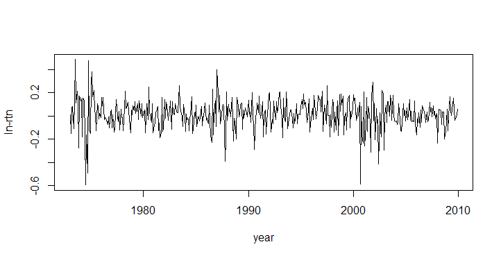
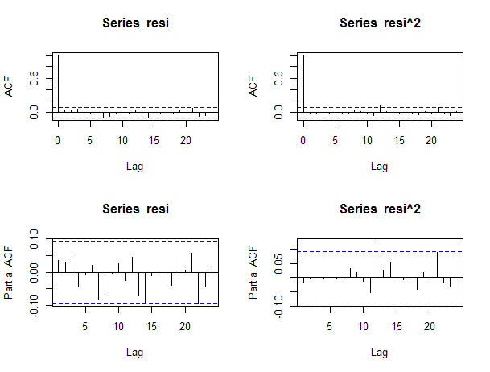
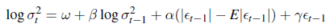

资产波动率及其模型
资产波动率是金融中最常用的风险度量。本章的目的是理解波动率的特点，学习波动率模型，并获取波动率建模和应用资产波动率的经验。
波动率在金融中有许多重要的应用。它是期权定价和资产分配中的一个关键因素。波动率在计算风险管理中的风险值（Value at Risk, VaR）时有重要作用。
4.1波动率的特征
- 存在波动率聚集(Volatility cluster)（即在某个特定时间段上波动率高，其他时间段上波动率较小）。
- 波动率随着时间的变化是连续的———波动率的跳跃式罕见的。
- 波动率不会散发到无穷———在一个固定的范围内变化。
- 存在杠杆效应(Leverage effect)，波动率一般对价格的大幅下降比上升更敏感。
一般有三种类型的波动率度量：
- 波动率是日收益率的条件标准差：这是波动率的常见定义。
- 隐含波动率：根据期权的价格用一个公式，如BS公式来推导出股票价格的波动率。
- 实际波动率：应用一天之内的高频数据来估计得到的日波动率。
4.2模型的结构
用rt表示某项资产在t时刻的对数收益率。波动率的基本思想是，序列{rt}是前后不相关或者低阶前后相关的，但序列不是独立的。
da=read.table("m-intcsp7309.txt",header=T)
intc=log(da$intc+1)
rtn=ts(intc,frequency=12,start=c(1973,1))
plot(rtn,type='l',xlab='year',ylab='ln-rtn')
t.test(intc) # 检验收益率是否为0
Box.test(intc,lag=12,type='Ljung') #混成检验接受原假设——序列不相关
par(mfcol=c(2,1))
acf(intc,lag=24) # ACF plots
acf(abs(intc),lag=24)
Box.test(abs(intc),lag=12,type='Ljung')#拒绝原假设——序列相关
4.3模型的建立
对波动率建立方程需要如下4个步骤： 1. 通过检验序列的前后相关性来简历一个均值方程，消除线性依赖； 2. 对均值方程的残差进行ARCH效应检验； 3. 如果ARCH效应显著，制定一个波动率模型，并对均值方程和波动率方程进行联合估计； 4. 检查模型并改进。
4.4ARCH效应的检验
所谓ARCH效应，简单说就是用均值方程的残差的平方来近似波动率，看其自相关函数是否显著，若显著不为0则可以认为其存在ARCH效应。
y=intc-mean(intc)
Box.test(y^2,lag=12,type='Ljung')$output
Box-Ljung test
data: y^2
X-squared = 92.939, df = 12, p-value = 1.332e-14
可以看到P值非常显著，即显著不为0，则认为这个序列有ARCH效应。
4.5ARCH模型
ARCH模型的基本思想：
- 资产收益率的扰动序列yt是前后不相关的，但不独立；
- yt的不独立性可以用其滞后值的简单二次函数来描述。
4.5.1ARCH模型的性质
下面是一个ARCH(1)模型：
性质：
- yt的无条件均值仍然是0，
- yt的无条件方差：
4.5.2ARCH模型的优点和缺点
优点：
- 该模型可以产生波动率聚集；
- 模型的扰动yt有厚尾部。
缺点：
- 无法产生波动率聚集；
- 对参数的限制相当强；
- 波动率的预报值会偏高。
4.5.3Intel股票月对数收益率的例子
通过yt^2的PACF定阶，先建立一个ARCH(3)模型
rt = μ+yt
yt = σtεt
σt2 = ω+α1yt−12+α2yt−22+α3+yt−32
library(fGarch) # Load package
da=read.table("m-intcsp7309.txt",header=T)
intc=log(da$intc+1)
m1=garchFit(~1+garch(3,0),data=intc,trace=F)#fit model
summary(m1)$output
Title:
GARCH Modelling
Call:
garchFit(formula = ~1 + garch(3, 0), data = intc, trace = F)
Mean and Variance Equation:
data ~ 1 + garch(3, 0)
<environment: 0x00000000123ff268>
[data = intc]
Conditional Distribution:
norm
Coefficient(s):
mu omega alpha1 alpha2 alpha3
0.012567 0.010421 0.232889 0.075069 0.051994
Std. Errors:
based on Hessian
Error Analysis:
Estimate Std. Error t value Pr(>|t|)
mu 0.012567 0.005515 2.279 0.0227 *
omega 0.010421 0.001238 8.418 <2e-16 ***
alpha1 0.232889 0.111541 2.088 0.0368 *
alpha2 0.075069 0.047305 1.587 0.1125
alpha3 0.051994 0.045139 1.152 0.2494
---
Signif. codes: 0 ‘***’ 0.001 ‘**’ 0.01 ‘*’ 0.05 ‘.’ 0.1 ‘ ’ 1
可以看到alpha2和alpha3的系数不显著，所以重新拟合一个ARCH(1)模型：
m2=garchFit(~1+garch(1,0),data=intc,trace=F)
summary(m2)$output
Title:
GARCH Modelling
Call:
garchFit(formula = ~1 + garch(1, 0), data = intc, trace = F)
Mean and Variance Equation:
data ~ 1 + garch(1, 0)
<environment: 0x000000001146bf78>
[data = intc]
Conditional Distribution:
norm
Coefficient(s):
mu omega alpha1
0.013130 0.011046 0.374976
Std. Errors:
based on Hessian
Error Analysis:
Estimate Std. Error t value Pr(>|t|)
mu 0.013130 0.005318 2.469 0.01355 *
omega 0.011046 0.001196 9.238 < 2e-16 ***
alpha1 0.374976 0.112620 3.330 0.00087 ***
---
Signif. codes: 0 ‘***’ 0.001 ‘**’ 0.01 ‘*’ 0.05 ‘.’ 0.1 ‘ ’ 1
现在模型的系数全部显著。
4.6GARCH模型
GARCH(1,1)=ARCH(oo)
GACH(1,1)模型等价于无穷阶的ARCH模型，其形式如下：
rt = μ+yt
yt = σtεt
σt2 = ω+αyt−12+βσt−12
4.6.1实例说明
ARCH模型的建模过程也适用于GARCH模型。一般GARCH(1,1)就够用了。
library(fGarch)
m4=garchFit(~1+garch(1,1),data=intc,trace=F)
summary(m4)
v1=volatility(m4) # Obtain volatility
resi=residuals(m4,standardize=T) # Standardized residuals
vol=ts(v1,frequency=12,start=c(1973,1))
res=ts(resi,frequency=12,start=c(1973,1))
par(mfcol=c(2,1)) # Show volatility and residuals
plot(vol,xlab='year',ylab='volatility',type='l')
plot(res,xlab='year',ylab='st. resi',type='l') $output
Coefficient(s):
mu omega alpha1 beta1
0.01126568 0.00091902 0.08643831 0.85258554
Std. Errors:
based on Hessian
Error Analysis:
Estimate Std. Error t value Pr(>|t|)
mu 0.0112657 0.0053931 2.089 0.03672 *
omega 0.0009190 0.0003888 2.364 0.01808 *
alpha1 0.0864383 0.0265439 3.256 0.00113 **
beta1 0.8525855 0.0394322 21.622 < 2e-16 ***
可以看到系数都显著，下面是波动率序列和残差序列：
par(mfcol=c(2,2)) # Obtain ACF & PACF
acf(resi,lag=24)
pacf(resi,lag=24)
acf(resi^2,lag=24)
pacf(resi^2,lag=24)
#绘制at和at^2的ACF和PACF
这些ACF和PACF确认了拟合模型充分刻画了对数收益率序列的条件均值和方差。
4.7指数GARCH模型
Nelson(1991)提出了指数GARCH模型(EGARCH)模型。具体地，为了允许在模型中体现正的和负的资产收益率的非对称效应，形式如下：

能体现杠杆效应的还有TGARCH、APGARCH等。